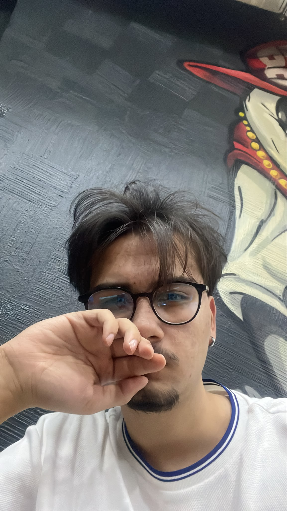

Yazılım Dilleri
- C
- C#
- Python
- MATLAB
- SQL

KİŞİSEL PORTFOLYO
Bilgisayar mühendisliği öğrencisi
Burada takılıyorum; projelerim, fotoğraflarım falan var. Hoş geldiniz, saygılarımla.
HAKKIMDA
20 yaşındayım ve bilgisayar mühendisliği okuyorum. Bu siteyi ve projelerimi aslında biraz meraktan, biraz da yeni şeyler öğrenmek için yapıyorum. Farklı insanlarla çalışmak, yeni şeyler denemek ve kendimi geliştirmek benim için önemli. Burayı da hem yaptıklarımı paylaşabileceğim hem de ileride dönüp baktığımda güzel anılarımı hatırlayabileceğim bir site olması için oluşturdum.
İzmir Bakırçay Üniversitesi'nde okuyorum.
Üzerinde çalıştığım ve zamanla geliştirdiğim işler.
Hem yeni şeyler öğrenmek hem de yaptıklarımı bir yerde toplamak için.
TEKNOLOJİLER
Projelerimde kullandığım, öğrendiğim ve zamanla kendimi geliştirdiğim teknolojiler.
TEKNOFEST Roket Yarışması, benim için hem teknik anlamda çok şey öğrendiğim hem de güzel anılar biriktirdiğim bir deneyim oldu. Simurg Roket Takımı'nda aviyonik ve yazılım alanında görev aldım. Uçuş bilgisayarı, sensör verilerinin işlenmesi, uçuş algoritmaları, telemetri ve yer istasyonu yazılımı gibi konular üzerinde çalıştım. Daha önce yalnızca teoride bildiğim birçok şeyin gerçek bir projede nasıl karşılık bulduğunu görmek oldukça güzeldi. Tabii bu süreç sadece kod yazmaktan ibaret değildi; bazen saatlerce çözemediğimiz sorunlar, tekrar tekrar yaptığımız testler, birlikte bulduğumuz çözümler ve arada yaşadığımız eğlenceli anlar da vardı. Yarışmada istediğimiz noktaya ulaşamasak da geriye öğrendiğim birçok şey, tanıştığım güzel insanlar ve dönüp baktığımda gülümseyerek hatırlayacağım anılar kaldı.
Yeni projeler, yeni deneyimler ve biriktirilecek daha çok anı var.
Benimle iletişime geçmek istersen aşağıdaki bağlantılardan ulaşabilirsin.